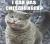

Desktop build with new extension APIs: Screenshot, Resource Loader and URL Filter
We've been working hard recently to improve the functionality available inside Opera extensions, and today we are proud to reveal some of the fruits of our labours. In this article we'll share with you some new experimental desktop builds that feature three new extension APIs:
- A screenshot API for capturing screenshots of pages within tabs
- A resource loader API for easier loading of local resources by an extension
- Some updates to the URL filter API (for adding and removing URLs to and from Opera's list of blocked URLs)
Below you'll find details of where to download the builds, what the new features do, and available documentation. Please give us as much feedback as you can on all this new experimental functionality before it becomes finalised.
Note that these features are now available in Opera for desktop version 12.10 and above.
Download the builds
We have builds available for:
- Windows i386 | Windows x64
- Mac i386/x64
- Linux tar.xz i386 | Linux tar.xz x64 | Linux deb i386 | Linux deb x64
- FreeBSD i386 | FreeBSD x64
The screenshot API
You can use the screenshot API to capture screenshots of pages within tabs in the browser by calling the getScreenshot() method from an extension injected or background script. You might want to take a screenshot of the current page and manipulate it within a <canvas>, or store it somewhere for later use.
Further reading:
The resource loader API
The resource loader API has been created to get around a problem whereby the extension security model will not allow local files to be accessed by an extension even if they are contained within the same extension package. The resource loader API's getfile() method can be used to grab the contents of a file, and those contents can then be read using the W3C File API. This is useful in so many ways — if you want to pull in different content, images or even script and styles into your extension.
Further reading:
The URL filter API
Finally, the URL filter API allows you to add and remove URLs to and from the Opera native content blocker's list of blocked URLs. Such changes added through the API are temporary, and only remain in effect for as long as the browser session is active and the extension is enabled.
This API was originally available in Opera 11.10, but since then we've added some new features that are available to experiment with in this set of builds:
- White list support — intended as a list of exceptions to the blocked URL (black) list. The basic syntax looks like this —
opera.extension.urlfilter.allow.add(pattern, options) - Including domains:
block.add(pattern, {includeDomains: ["google.com", "google.co.uk", "google.com.au"]) - Excluding domains:
block.add(pattern, {excludeDomains: ["google.com", "google.co.uk", "google.com.au"]) - Ability to fire events when a URL is blocked (black list) or allowed (white list). At the moment we don't intend to allow firing of events when there are no matches (when the URL is allowed because it is not in any list), as this can potentially impact performance
- Third-party blocking (for example, blocking facebook.com only when it is called from another site) of URLs:
block.add(pattern, {thirdParty: true}) - Filtering by resource types (scripts, images, stylesheets, etc.):
block.add(pattern, {resources: urlfilter.RESOURCE_SCRIPT | urlfilter.RESOURCE_STYLESHEET) - New filter syntax:
- There is now a separator wildcard character available,
^. For example,example.com^foowill matchexample.com/fooandexample.com?foo - You also have hostname matching syntax —
||. For example,||example.comwill match any URL withexample.comas the filter
- There is now a separator wildcard character available,
- New syntax will also be enabled in the urlfilter.ini file
Further reading:
- Read the tutorial:
Site blocking with Opera’s URL Filter API
- View the URL filter API documentation
- View the
add()method documentation - View the
excludeDomainsproperty documentation - View the
includeDomainsproperty documentation - View the
resourcesproperty documentation - View the
thirdPartyproperty documentation
Chris Mills

Chris Mills is a web technologist, open standards evangelist and education agitator, currently working at Opera Software in the developer relations team. He spends most of his time writing articles about web standards for dev.opera.com and other publications (such as .net mag and A List Apart), giving talks at universities and industry conferences, and lobbying universities to improve their web education courses. He believes that education is the answer to everything, but in particular he is passionate about using education to improve the overall content quality, accessibility, usability and future-viability of the Web.
He is the creator of the Opera Web standards curriculum, contributor to the WaSP InterACT project, and coauthor of InterACT with web standards: A Holistic Approach to Web Design. In August 2011, he also accepted the position of co-chair of the newly-formed Web Education Community Group.
Outside work he is a heavy metal drummer, proud father of three and lover of good beer.
This article is licensed under a Creative Commons Attribution 3.0 Unported license.
Comments
-
This is very nice and thanks.A new and improved Opera is waiting us...
-

"Note that these features will not be part of the final Opera 12 release, but a later release."
-
Better late than never :) Finally, we could see improvements on the extension API.
-

Nice improvements, but please add an opera.extension.urlfilter.block.test(url) function. I've been wanting to make a script to remove links to blocked content (or strike-through link text) since before the URL API existed.
-

It’s great that Opera is improving the URL filter. But when will we finally be able to use regular expressions with it?
-

Chris, have you got more details on the urlfilter changes? sample filters etc?
-

@svdb0
-

@resource loader, would it be possible for the user to add files to an extension package, so local files can be used by the extension:
-

@JanGen: Although in theory you could do things with opera.extension.urlfilter.block.test() which you couldn't do with a CSS pseudo-class (in combination with querySelectorAll), I can't think of any practical cases. And -o-blocked would be easier to use in the simple cases. So I'd be happy if -o-blocked were implemented instead (or in addition).
-

Maybe urlfilter.block.get() (see comment here http://dev.opera.com/articles/view/extensions-api-urlfilter/) should return all (or for current page?) filters in JSON format (with all properties included)? Please tell more about events - they may be solution.
-

@Lachlan Hunt: Thanks for your reply, and for considering this feature request.
-

@Lachlan Hunt
-
I know you said that urlfilter.ini gets the new syntax, but does it get all the new features, too? If not, which ones doesn't it get?
-

@rseiler, urlfilter.ini only gets the new pattern syntax. None of the new options (include/excludeDomains, thirdParty or resource types) are supported in urlfilter.ini.
-
When are extensions going to get Unite's old functionality?
-
In all other major browsers extensions can modify context and main menus. What a shame that opera haven't this. This blocks development of tons useful extensions
-

can not open my browser for opera, a dragonfly to login from my desk top as direct link that is private
-

That stuff is more important than 64bits or gpu. Opera really needs a new adblock compatible with adblock plus filters. So you can block ads without white spaces or block all javascript.
-

how about urlfilter.allow/block.clear() ?
-

urlfilter.(allow|block).clear() would be a great addition in my opinion. (Or urlfilter.clear() to clear both at the same time)
-
There's a suggestion list to take attention: http://code.google.com/p/adblockforchrome/issues/detail?id=5143#c42
No new comments accepted.Mağruf Çolakoğlu
Wednesday, May 16, 2012
Martin Kadlec
Wednesday, May 16, 2012
what a shame ... but still, thank you :)
Çağlar Yeşilyurt
Wednesday, May 16, 2012
svdb0
Wednesday, May 16, 2012
And as you should already have such a function for internal use, it wouldn't take much time to expose it to JavaScript.
blackcaeser
Wednesday, May 16, 2012
mp3geek
Thursday, May 17, 2012
/Fanboy
JanGen
Thursday, May 17, 2012
a:-o-blocked { text-decoration: line-through;}
:)
JanGen
Thursday, May 17, 2012
1 by settings in preferences (security issues?!)
2 adding files to a directory in the extension folder (compressed?!)
svdb0
Friday, May 18, 2012
I would think that a test() function would be easier to implement though.
gwarser
Friday, May 18, 2012
When I use "google.com" in include/excludeDomain it also match www.google.com and plus.google.com?
How about special top-level domain (.tld). (e.g. block "google.tld" instead of long list of domains or use it in include/excludeDomains)?
Screenshot API: how about security? (take screenshot and send somewhere without user knowledge).
//edit:
This is correct filter?
urlfilter.block.add('*', {thirdParty: true, resources: urlfilter.RESOURCE_SCRIPT});
svdb0
Friday, May 18, 2012
The test() function as I envisioned it, would only tell you whether the link would be blocked if followed, or not.
It was not intended as a way to query the URL filter rule list, though I could imagine that such an API could also be useful.
But even with the ability to query the rule list, a test() function would be useful, so that the mechanism for interpreting the rules would not have to be replicated in JavaScript code when the only concern is whether a link is blocked or not.
I was not aware that Opera allows blocking based on other information than just the URL. An extra (optional?) parameter to test() to supply this information would indeed be appropriate.
As for your question regarding making a test() function available from User JavaScript, that would indeed be the most convenient way.
But I like the CSS pseudo-class way as well.
The use cases which I had in mind were striking through links to blocked URLs, and to remove images which link to blocked sites. (Which I guess could be done through CSS as well.)
Another theoretical use case — nothing which intend to actually implement — would be to make a more sophisticated block list manager in an extension.
In this case, a function to query the actual rules (as well as a test() function) would be useful. Just the CSS pseudo-class would not suffice here.
Also, now that I have your attention, here are a few other suggestions with respect to the URL filtering:
- I would like it to be easier to block independently of subdomains, protocols, and port numbers. Right now, a block rule *://example.com:*/ matches http://example.com:8080/, but not http://example.com/ . And *://*.example.com/ does not match http://example.com/ .
- It may be useful to have a third state besides "block" and "don't block", namely "raise an event". In the (user JavaScript) event handler, you could perform more complex checks than glob matching, such as examining the parameters.
- Another useful feature would be the ability to rewrite URLs as they are activated (so also for JavaScript redirects). This could be implemented using the same event mechanism, by allowing the URL to be changed from the event handler. Such an event handler could for instance rewrite http://example.com/out?url=http://external.example.com/ to http://external.example.com/
With the event mechanism suggested above, and a single rule raising an event for every link followed, it would even be possible to write an URL blocker extension completely in JavaScript, using localStorage to store the rules. Such an extension could be much more powerful than the built-in blocker, using RegExps, subdomain and port independent blocking, blocking based on parameters, etc.
svdb0
Saturday, May 19, 2012
Good to know about the || and ^.
Regarding the third state, I was referring to performing more semantic checks on the parameters in the URL. For instance, block a URL which redirects to a blocked URL stored in an URL parameter.
One situation where you might want this is for sites which route external links through some internal page, perhaps for statistics. These sites may look like http://example.com/out?url=http://badsite.example.com .
I would like to be able to do something like this:
// ==UserScript==
// @include http://example.com/out?*
// ==/UserScript==
window.opera.addEventListener('urlfilter', function (e) {
if (e.url.splice(0, 23) !== "http://example.com/out?")
return true;
var rest = "&" + e.url.splice(27);
var urlStart = rest.indexOf("&url=");
if (urlStart === -1)
return true;
rest = rest.splice(urlStart + 5);
var urlEnd = rest.indexOf("&");
if (urlEnd !== -1)
rest = rest.splice(0, urlEnd);
var dest = decodeURIComponent(rest);
if (opera.extension.urlfilter.test(dest)) {
e.preventDefault();
return false;
}
return true;
}, false);
This would be all the more useful if we could strike through blocked links.
As for rewriting URLs before they are activated, how would I do this? I could edit all the , , <script>, <style>, references etc. before the page is activated, but I would also want to rewrite URLs in elements which were dynamically created (through document.createElement(), document.write(), Element.innerHTML, maybe DOMParser.parseFromString, etc.), as well as URLs used in location.replace(), window.open(), etc.
rseiler
Saturday, May 19, 2012
Lachlan Hunt
Tuesday, May 29, 2012
nahtanoj999
Thursday, June 14, 2012
Alexander
Thursday, June 14, 2012
4just1
Friday, June 15, 2012
katorce
Friday, June 22, 2012
Also a feed reader which mix opera reader, and google reader sync as feedly does. With a beautiful interface (on the browser not on the lateral bar). A feedly with all opera reader stuff, and google sync, yeah, I'd love that.
Martin Kadlec
Thursday, July 12, 2012
Fam lam
Saturday, July 28, 2012
Will there also be a method to set case sensitivity? Nearly every time if I want to block (for example) */ads/*, then I also want to block */adS/* */aDs/* */Ads/* */ADs/* */AdS/* */aDS/* and */ADS/*. It would be great if this wouldn't require 2^n rules, but just one.
Also, will it be possible to block background images loaded by CSS?
It seems like you can't filter for the image loaded by elements containing style="background-image: url('http://site.com/image.png');"
Last but not least, is there any documentation about which rules are not allowed? The rule "*" for example is not honored it seems. Therefore I'm not able to let users exclude sites from any resources to be blocked because I can't use urlfilter.allow.add("*", {includeDomains: ['theSiteYouWantUnblocked']}) (which would exclude all first and third party resources on domain 'theSiteYouWantToUnblock', without the need to manually exclude every individual resource on the page). Being able to do that would allow people to show for example ads on sites where they think the ads are actually relevant for them.
metude
Monday, July 30, 2012